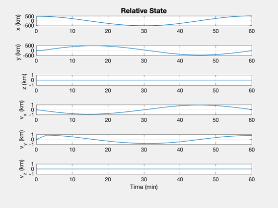
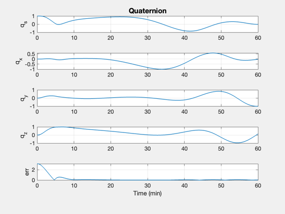
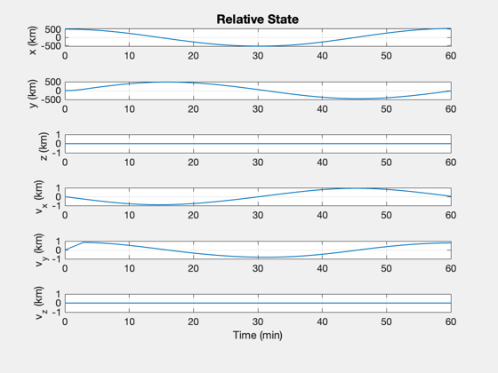
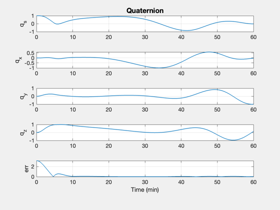
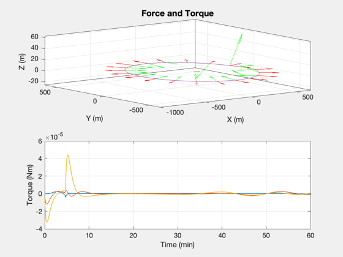
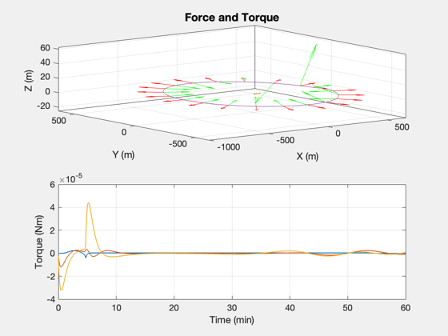

Simulate proximity operations around an asteroid.
The spacecraft has 3-axis thruster control. Ideal attitude sensing is assumed. The PID controller produces a torque vector which is applied directly to the spacecraft. The control keeps the body X axis aligned towards the asteroid as the maneuver takes place. The initial relative velocity is zero; it takes about 3 minutes to achieve the target velocity, and another few minutes for the attitude rates to settle.
The 3D plot shows the resulting trajectory along with the force vector in green and the sensor vector (body X) in red.
See also Inertias, CircularManeuver, PID3Axis, RHSRigidBody6DOF, LoadCAD, DrawCAD
Contents
-------------------------------------------------------------------------- Copyright (c) 2013-2014 Princeton Satellite Systems, Inc. All rights reserved. -------------------------------------------------------------------------- Since version 2014.1 --------------------------------------------------------------------------
% This prevents problems if d is defined as a double in the workspace %-------------------------------------------------------------------- clear d
Simulation parameters
%----------------------- periodOrbit = 60; % min nPeriods = 1; dT = 1; % s rOrbit = 500; % m el = 0; % Elevation of orbit with respect to the xy-plane thrust = 0.1; % Thrust level for the tangential burn d.mass = 20; % kg % Compute the time parameters %---------------------------- tEnd = nPeriods*periodOrbit*60; nSim = ceil(tEnd/dT); % Spacecraft model - 6U CubeSat %------------------------------ d.inertia = Inertias( d.mass, [0.3 0.2 0.1], 'box', 1 ); % kg-m^2 % State vector [r;v;q;omega] %--------------------------- x = [rOrbit;0;0; 0;0;0; 1;0;0;0;0;0;0]; % Orbit normal assuming we always start in the xy-plane %------------------------------------------------------ u = Unit(x(1:3)); az = atan2(u(2),u(1)); uT = [sin(az)*cos(el);cos(az)*cos(el);sin(el)]; % Set up the control %------------------- dC = PID3Axis; % Default data structure dC.mode = 1; % 1 = align two vectors dC.body_vector = [1;0;0]; % align X axis dC.inertia = d.inertia;
Design the maneuver
Compute the required force and impulse to achieve the desired orbital period
%--------------------- [fR, iT] = CircularManeuver( periodOrbit, rOrbit, d.mass ); fprintf('Radial force = %12.2f N\n',fR); fprintf('Tangential impulse = %12.2f Ns\n',iT);
Radial force = 0.03 N Tangential impulse = 17.45 Ns
Simulate
%--------- % Plotting vectors %----------------- xP = zeros(length(x)+7,nSim); fP = zeros(3,nSim); % Time vector %------------ t = (0:(nSim-1))*dT; for k = 1:nSim % Align with nadir - i.e. towards the asteroid %--------------------------------------------- qECIToBody = x(7:10); uR = Unit(x(1:3)); dC.eci_vector = -uR; [d.torque, dC] = PID3Axis( qECIToBody, dC ); % Find the pointing error %------------------------ body_vector_eci = QTForm( qECIToBody, dC.body_vector ); arg = body_vector_eci'*dC.eci_vector; if( abs(arg) > 1 ) arg = sign(arg); end err = acos(arg); % Burn until the tangential impulse is complete %---------------------------------------------- if( iT > 0 ) fT = thrust; iT = iT - thrust*dT; else fT = 0; end % The total force vector %----------------------- d.force = fT*uT - fR*uR; fP(:,k) = d.force; % Store for plotting %------------------- xP(:,k) = [x;d.force;d.torque;err]; % Integrate %---------- x = RK4(@RHSRigidBody6DOF,x,dT,t(k),d); end
Plot the results
%------------------ [t,tL] = TimeLabl(t); yL = {'x (km)','y (km)','z (km)','v_x (km)','v_y (km)','v_z (km)'}; Plot2D( t, xP(1:6,:), tL, yL, 'Relative State' ) yL = {'q_s', 'q_x', 'q_y', 'q_z' 'err'}; Plot2D( t, xP( [7:10 20],:), tL, yL, 'Quaternion' ); yL = {'\omega_x','\omega_y','\omega_z'}; Plot2D( t, xP(11:13,:), tL, yL, 'Attitude Rate'); yL = {'f_x (N)' 'f_y (N)' 'f_z (N)' 't_x (Nm)' 't_y (Nm)' 't_z (Nm)'}; Plot2D( t, xP(14:19,:), tL, {'Force (N)','Torque (Nm)'}, 'Force and Torque',... 'lin',{[1 2 3],[4 5 6]}); % 3D plot %-------- g = LoadCAD('Apophis.obj',[],[],160); DrawCAD( g ); set(gcf,'name','Apophis Proximity Operations') hold on plot3(xP(1,:),xP(2,:),xP(3,:)); xlabel('X (m) ') ylabel('Y (m) ') zlabel('Z (m) ') % Add the force vectors %---------------------- dN = nSim/20; j = 1:dN:nSim; fPMag = log10(Mag(fP)); fP = Unit(fP); xP0 = xP(:,j); fPs = [fP(1,:).*fPMag;fP(2,:).*fPMag;fP(3,:).*fPMag]; quiver3(xP0(1,:),xP0(2,:),xP0(3,:),fPs(1,j),fPs(2,j),fPs(3,j),0.5,'r'); % Add the sensor vectors in green %-------------------------------- sP = QTForm( xP0(7:10,:), [1;0;0] ); quiver3(xP0(1,:),xP0(2,:),xP0(3,:),sP(1,:),sP(2,:),sP(3,:),0.5,'g'); %-------------------------------------- % PSS internal file version information %-------------------------------------- % $Id: 2b142e3ee2c90bb968f83c9a8a37c01b8c4a9456 $
  
   
